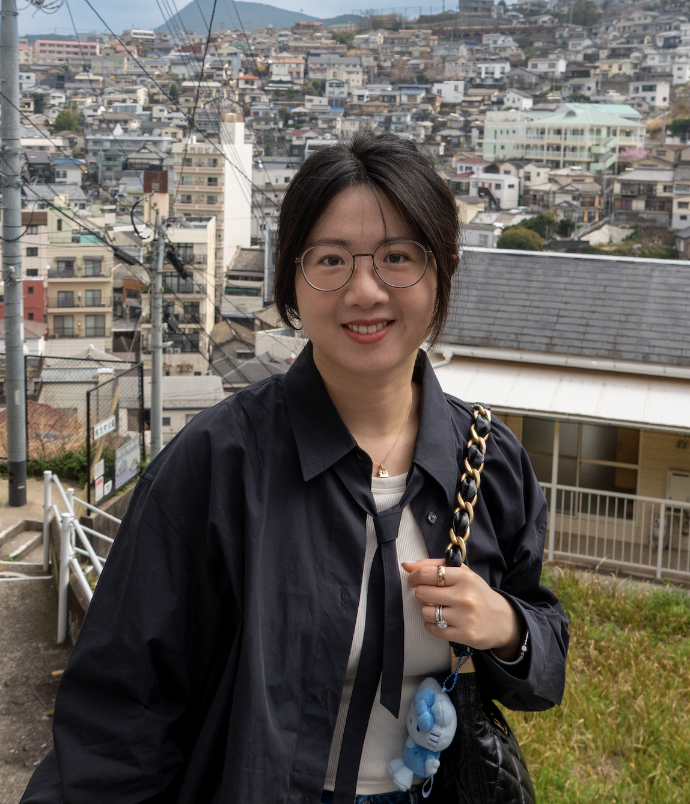

I am a Member of Technical Staff at Perplexity AI, working on Memory Agent and Related Queries. Previously I was a Tech Lead at Pinterest, driving the Related-Pins Recommendation system — the largest organic surface serving over 50% of organic traffic. I develop and productionize large-scale deep learning models for ranking, recommendation, and personalization. My work spans recommendation systems, ads ranking, NLP, and applied statistics.
haomiao.li at aya dot yale dot edu